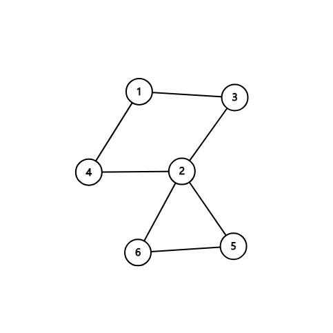
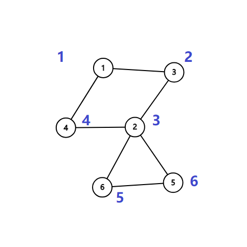
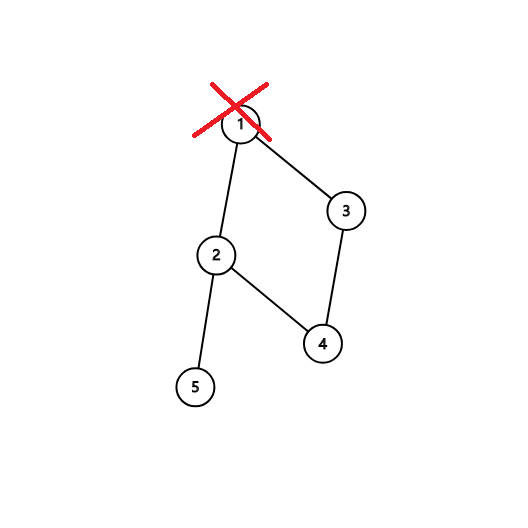

割点和桥
相关阅读：双联通分量
割点¶
如果在一个图中，如果把一个点删除，那么这个图不再联通，那么这个点就是割点（割顶），当然是在无向图。
如何实现？¶
如果我们尝试删除每个点，并且判断这个图的联通性，那么复杂度会特别的高。所以要介绍一个常用的算法：。
首先，我们上一个图：

很容易的看出割点是 ２，而且这个图仅有这一个割点。
首先，我们按照 序给他打上时间戳（访问的顺序）。

这些信息被我们保存在一个叫做 num 的数组中。
还需要另外一个数组 low，用它来存储不经过其父亲（你有多个那么就看你遍历到了哪个）能到达的时间戳。
例如 ２ 的话是 １， ５ 和 ６ 是 ３。
然后我们开始 ，我们判断某个点是否是割点的根据是：对于某个顶点 ，如果存在至少一个顶点 （ 的儿子），使得 ，即不能回到祖先，那么 点为割点。
另外，如果搜到了自己（在环中），如果他有两个及以上的儿子，那么他一定是割点了，如果只有一个儿子，那么把它删掉，不会有任何的影响。比如下面这个图，此处形成了一个环，从树上来讲它有 ２ 个儿子：

我们在访问 １ 的儿子时候，假设先 到了 ２，然后标记用过，然后递归往下，来到了 ４， ４ 又来到了 ３，当递归回溯的时候，会发现 ３ 已经被访问过了，所以不是割点。
更新 low 的伪代码如下：
1 2 3 | 如果 v 是 u 的儿子 low[u] = min(low[u], low[v]); 否则 low[u] = min(low[u], num[v]); |
例题¶
Code¶
1 2 3 4 5 6 7 8 9 10 11 12 13 14 15 16 17 18 19 20 21 22 23 24 25 26 27 28 29 30 31 32 33 34 35 36 37 38 39 40 41 42 43 44 45 46 47 48 49 50 51 52 53 54 55 56 57 58 59 60 61 62 | /* 洛谷 P3388 【模板】割点（割顶） */ #include <bits/stdc++.h> using namespace std; int n, m; // n：点数 m：边数 int num[100001], low[100001], inde, res; // num：记录每个点的时间戳 // low：能不经过父亲到达最小的编号，inde：时间戳，res：答案数量 bool vis[100001], flag[100001]; // flag: 答案 vis：标记是否重复 vector<int> edge[100001]; // 存图用的 void Tarjan(int u, int father) // u 当前点的编号，father 自己爸爸的编号 { vis[u] = true; // 标记 low[u] = num[u] = ++inde; // 打上时间戳 int child = 0; // 每一个点儿子数量 for (auto v : edge[u]) // 访问这个点的所有邻居 （C++11） { if (!vis[v]) { child++; // 多了一个儿子 Tarjan(v, u); // 继续 low[u] = min(low[u], low[v]); // 更新能到的最小节点编号 if (father != u && low[v] >= num[u] && !flag [u]) // 主要代码 // 如果不是自己，且不通过父亲返回的最小点符合割点的要求，并且没有被标记过 // 要求即为：删了父亲连不上去了，即为最多连到父亲 { flag[u] = true; res++; // 记录答案 } } else if (v != father) low[u] = min(low[u], num[v]); // 如果这个点不是自己，更新能到的最小节点编号 } if (father == u && child >= 2 && !flag[u]) // 主要代码，自己的话需要 2 个儿子才可以 { flag[u] = true; res++; // 记录答案 } } int main() { cin >> n >> m; // 读入数据 for (int i = 1; i <= m; i++) // 注意点是从 1 开始的 { int x, y; cin >> x >> y; edge[x].push_back(y); edge[y].push_back(x); } // 使用 vector 存图 for (int i = 1; i <= n; i++) // 因为 Tarjan 图不一定联通 if (!vis[i]) { inde = 0; // 时间戳初始为 0 Tarjan(i, i); // 从第 i 个点开始，父亲为自己 } cout << res << endl; for (int i = 1; i <= n; i++) if (flag[i]) cout << i << " "; // 输出结果 for (int i = 1; i <= n; i++) cout << low[i] << endl; return 0; } |
割边¶
和割点差不多，还叫做割桥。
无向联通图中，去掉一条边，图中的连通分量数增加，则这条边，称为桥或者割边，当然也是在无向图。
实现¶
和割点差不多，只要改一处： 就可以了，而且不需要考虑根节点的问题。
割边是和是不是根节点没关系的，原来我们求割点的时候是指点 是不可能不经过父节点 为回到祖先节点（包括父节点），所以顶点 是割点。如果 表示还可以回到父节点，如果顶点 不能回到祖先也没有另外一条回到父亲的路，那么 这条边就是割边
算法还有许多用途，常用的例如求强连通分量，缩点，还有求 的用途等。
build本页面最近更新：，更新历史
edit发现错误？想一起完善？ 在 GitHub 上编辑此页！
people本页面贡献者：
copyright本页面的全部内容在 CC BY-SA 4.0 和 SATA 协议之条款下提供，附加条款亦可能应用